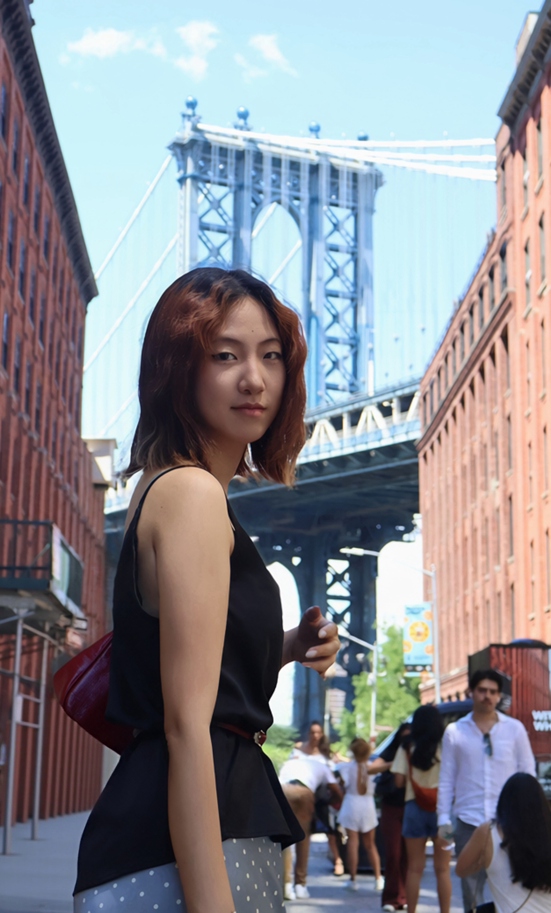
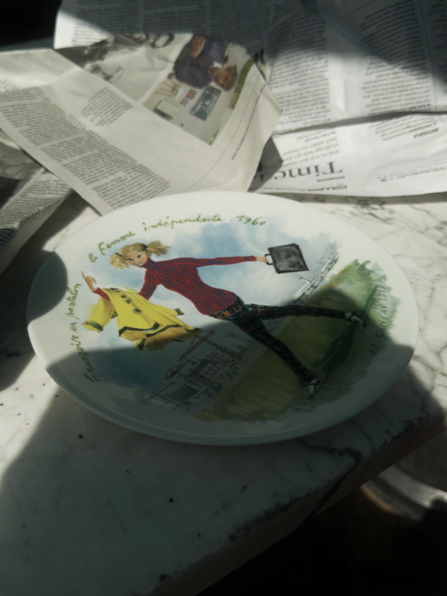

MEDIAFASHIONSTORIES
I create visual stories at the intersection of fashion, culture, digital media, and emerging creative technologies.
我在时尚、文化、数字媒体与新兴创意技术的交叉领域进行视觉叙事与内容创作。


My practice
我的创作方向
Visual communication should not only look polished. It should create a point of view.
视觉传播不应只追求精致，更需要建立清晰而独特的观点。
I am a Media, Culture, and Communication student at New York University, with a minor in Fashion Studies. My interests sit at the intersection of fashion, visual culture, digital media, and storytelling.
I am especially drawn to work that turns research, emotion, and cultural observation into clear visual language—whether through short-form film, editorial content, social media, exhibitions, or web design.
我就读于纽约大学媒体、文化与传播专业，并辅修时尚研究。我的兴趣集中在时尚、视觉文化、数字媒体与叙事的交叉领域。
我尤其关注如何将研究、情绪与文化观察转化为清晰的视觉语言，并通过短片、编辑内容、社交媒体、展览或网页设计进行表达。
Read about Via了解 ViaFor collaborations, opportunities, and creative conversations.
欢迎就合作，工作机会或创意项目与我联系。